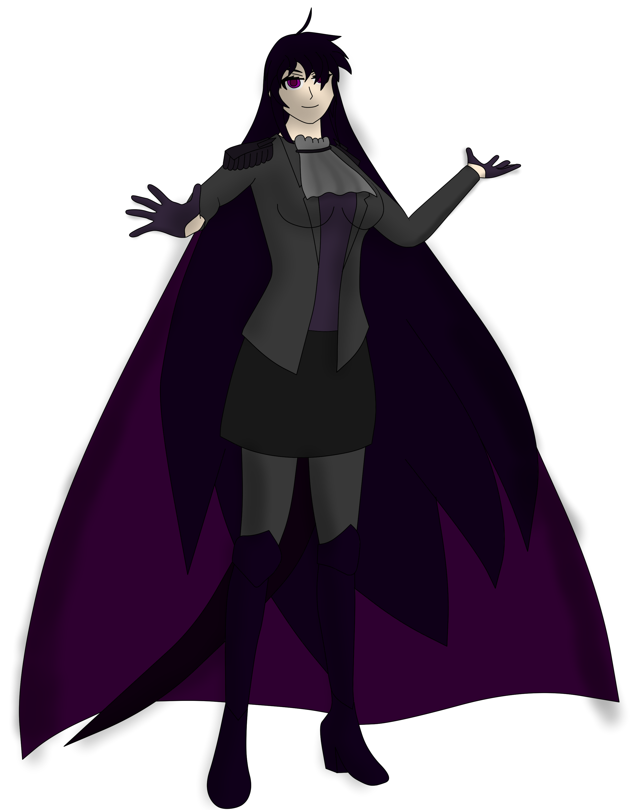

Uther Lux
Tiamat's Current Appearance'
Name: Tiamat Lux
Gender: Female
Height: 182.88 cm
Weight: 77 kg
Age: 525,431 years
Tiamat Lux is the Cosmonian of Darkness. A rather confident, rather arrogant, and caring individual. Initially having the power to modify herself, she has now lost it in exchange to better protect his brother. She is about as fast as Uther and has rather well versed on the elemental arts.
Tiamat is the tallest female cosmonian hybrid in Omneria. She stands at almost 183 cm just barely taller than her aunt, Tomoe. She also sports the second longest hair for a cosmonian in Omneria, with her hair reaching down to her lower knees. This is only surpassed by Tomoe who has hair that reaches several meters behind her. Her default outfit includes a blazer and cravat completed with a skirt and armored boots. She is the only cosmonian to have a non-humanoid part which is a purple appendage that sticks out from her rear due to her self modification, many often confused this appendage as a tail.
Tiamat, unlike Uther, is rather arrogant. She takes things way too lightly and often gets sometimes bested by more experienced people who know what they are doing. Due to her confidence however, she tends to be more brave on parts where others tend to chicken out. She also holds Uther's code of combat etiquette, often sparing them and will often kill if it is a deathmatch situation or insanity kills. Away from fights and such, there is basically no stopping on how much Tiamat likes to tease others, often joking on her younger half-sister Charlemagne on despite being taller, she isn't as tall as her which often led her to get outright roasted. Other than that, she cares deeply for Uther as they both share a mutual defense between each other and won't mind defending the rest of their family from threats that loom over the horizon as well.
Tiamat is fast as Uther, and according to her: "If light is fast, so is darkness. That's why when you turn off a light switch darkness instantly returns and floods the room.", unlike Uther, she phas exceptional mastery over the elements, being able to wield all elements on par with human elemental grandmasters.